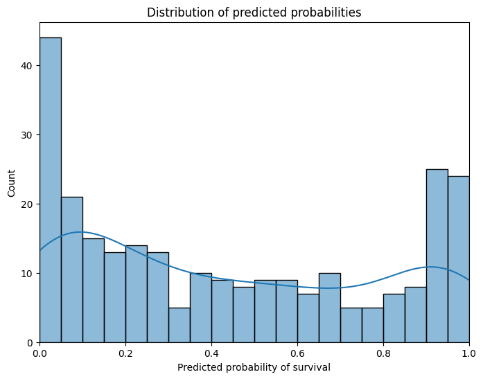

import numpy as np
import pandas as pd
import seaborn as sns
from sklearn.datasets import fetch_openml, load_breast_cancer
from sklearn.ensemble import RandomForestClassifier
from sklearn.model_selection import train_test_split
from sklearn.impute import SimpleImputer
from sklearn.compose import ColumnTransformer
from sklearn.pipeline import Pipeline
from sklearn.preprocessing import OrdinalEncoder
from PyALE import ale
import matplotlib.pyplot as plt
pd.set_option("display.max_columns", None)
plt.rcParams["figure.facecolor"] = (1, 1, 1, 0) # RGBA tuple with alpha=0
plt.rcParams["axes.facecolor"] = (1, 1, 1, 0) # RGBA tuple with alpha=0ALE PLot
Accumulated local effects describe how features influence the prediction of a machine learning model on average. ALE plots are a faster and unbiased alternative to partial dependence plots (PDPs).
X, y = fetch_openml("titanic", version=1, as_frame=True, return_X_y=True, parser="pandas")
categorical_columns = ["pclass", "sex", "embarked"]
numerical_columns = ["age", "sibsp", "parch", "fare"]
X = X[categorical_columns + numerical_columns]
y = y.replace({"0": 0, "1": 1})
# Remove rows with missing values in X and y
missing_mask = X.isna().any(axis=1)
X = X[~missing_mask]
y = y[~missing_mask]
X_train, X_test, y_train, y_test = train_test_split(X, y, stratify=y, random_state=42)X| pclass | sex | embarked | age | sibsp | parch | fare | |
|---|---|---|---|---|---|---|---|
| 0 | 1 | female | S | 29.0000 | 0 | 0 | 211.3375 |
| 1 | 1 | male | S | 0.9167 | 1 | 2 | 151.5500 |
| 2 | 1 | female | S | 2.0000 | 1 | 2 | 151.5500 |
| 3 | 1 | male | S | 30.0000 | 1 | 2 | 151.5500 |
| 4 | 1 | female | S | 25.0000 | 1 | 2 | 151.5500 |
| ... | ... | ... | ... | ... | ... | ... | ... |
| 1301 | 3 | male | C | 45.5000 | 0 | 0 | 7.2250 |
| 1304 | 3 | female | C | 14.5000 | 1 | 0 | 14.4542 |
| 1306 | 3 | male | C | 26.5000 | 0 | 0 | 7.2250 |
| 1307 | 3 | male | C | 27.0000 | 0 | 0 | 7.2250 |
| 1308 | 3 | male | S | 29.0000 | 0 | 0 | 7.8750 |
1043 rows × 7 columns
categorical_encoder = OrdinalEncoder(handle_unknown="use_encoded_value", unknown_value=-1, encoded_missing_value=-1)
numerical_pipe = SimpleImputer(strategy="mean")
preprocessing = ColumnTransformer(
[
("cat", categorical_encoder, categorical_columns),
("num", numerical_pipe, numerical_columns),
],
verbose_feature_names_out=False,
)
rf = Pipeline(
[
("preprocess", preprocessing),
("classifier", RandomForestClassifier(random_state=42)),
]
)
rf.set_output(transform="pandas")
rf.fit(X_train, y_train)Pipeline(steps=[('preprocess',
ColumnTransformer(transformers=[('cat',
OrdinalEncoder(encoded_missing_value=-1,
handle_unknown='use_encoded_value',
unknown_value=-1),
['pclass', 'sex',
'embarked']),
('num', SimpleImputer(),
['age', 'sibsp', 'parch',
'fare'])],
verbose_feature_names_out=False)),
('classifier', RandomForestClassifier(random_state=42))])In a Jupyter environment, please rerun this cell to show the HTML representation or trust the notebook. On GitHub, the HTML representation is unable to render, please try loading this page with nbviewer.org.
Pipeline(steps=[('preprocess',
ColumnTransformer(transformers=[('cat',
OrdinalEncoder(encoded_missing_value=-1,
handle_unknown='use_encoded_value',
unknown_value=-1),
['pclass', 'sex',
'embarked']),
('num', SimpleImputer(),
['age', 'sibsp', 'parch',
'fare'])],
verbose_feature_names_out=False)),
('classifier', RandomForestClassifier(random_state=42))])ColumnTransformer(transformers=[('cat',
OrdinalEncoder(encoded_missing_value=-1,
handle_unknown='use_encoded_value',
unknown_value=-1),
['pclass', 'sex', 'embarked']),
('num', SimpleImputer(),
['age', 'sibsp', 'parch', 'fare'])],
verbose_feature_names_out=False)['pclass', 'sex', 'embarked']
OrdinalEncoder(encoded_missing_value=-1, handle_unknown='use_encoded_value',
unknown_value=-1)['age', 'sibsp', 'parch', 'fare']
SimpleImputer()
RandomForestClassifier(random_state=42)
from sklearn.metrics import classification_report
test_preds = rf.predict_proba(X_test)[:, 1]
print(classification_report(y_test, test_preds > 0.5)) precision recall f1-score support
0 0.80 0.81 0.80 155
1 0.71 0.71 0.71 106
accuracy 0.77 261
macro avg 0.76 0.76 0.76 261
weighted avg 0.77 0.77 0.77 261
fig, ax = plt.subplots(figsize=(8, 6))
sns.histplot(test_preds, bins=20, kde=True, ax=ax)
ax.set_xlabel("Predicted probability of survival")
ax.set_ylabel("Count")
ax.set_title("Distribution of predicted probabilities")
ax.set_xmargin(0)
plt.show()
class clf_dummy:
def predict(df):
return rf.named_steps["classifier"].predict_proba(df)[:, 1]X_test_transformed = pd.DataFrame(
rf.named_steps["preprocess"].transform(X_test),
columns=rf.named_steps["preprocess"].get_feature_names_out(),
)fig, axes = plt.subplots(3, 3, figsize=(20, 12))
axes = axes.flatten()
for i, col in enumerate(X_test_transformed.columns):
if col in numerical_columns:
ale(X=X_test_transformed, model=clf_dummy, feature=[col], feature_type="continuous", fig=fig, ax=axes[i])
elif col in categorical_columns:
ale(X=X_test_transformed, model=clf_dummy, feature=[col], feature_type="discrete", fig=fig, ax=axes[i])
category_names = rf.named_steps["preprocess"].transformers_[0][1].categories_[i]
axes[i].set_xticks(axes[i].get_xticks())
axes[i].set_xticklabels(category_names)
else:
continue
for ax in fig.axes:
ax.set_title("")
ax.tick_params(axis="y", labelcolor="black")
ax.set_ylabel("")
ax.set_xmargin(0)
for col, ax in zip(X_test_transformed.columns, fig.axes):
ax.set_title(col)
plt.tight_layout()
plt.show()